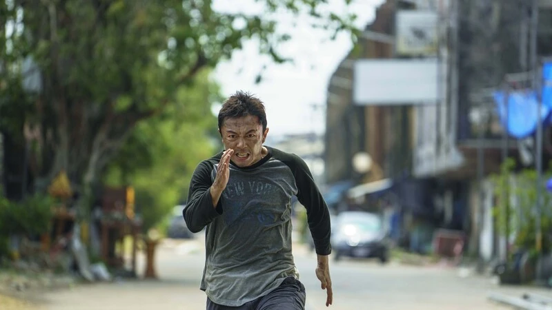
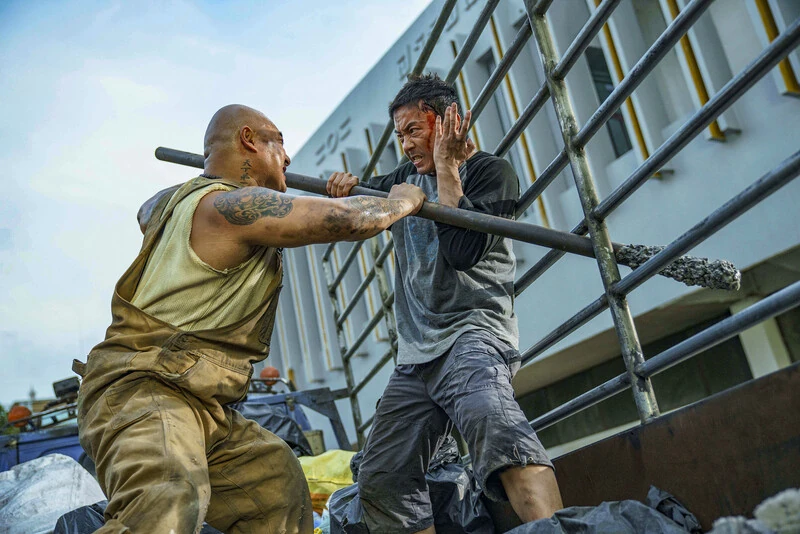

Spätvorstellung, und ich war hellwach
Manchmal geht die Rechnung einfach auf. The Furious hatte ich schon länger auf dem Zettel, die Stimmen von den Festivals waren euphorisch und im Podcast Genre Geschehen wurde der Film ebenfalls hochgejubelt. Da ich das Genre ohnehin sehr gerne mag und mich regelmäßig über Neuerscheinungen informiere, war die Sache klar: Da gehe ich rein. Geworden ist es dann die Spätvorstellung, und ich bin nach 113 Minuten mit einem breiten Grinsen und einer ordentlichen Portion Adrenalin aus dem Saal marschiert. So viel Spaß hatte ich im Kino schon ewig nicht mehr.
Und weil ich mich hier nicht drücken will, gleich die große These vorneweg: Seit The Raid und The Raid 2 habe ich keine so gut choreografierte Action mehr gesehen. Ich gehe sogar noch einen Schritt weiter und sehe The Furious als das aktuelle Magnum Opus des asiatischen Actionkinos beziehungsweise des Kampfsport-Genres.
Worum geht's?
Viel muss man dazu gar nicht sagen, und das ist auch überhaupt nicht schlimm. Wang Wei (Xie Miao) lebt zurückgezogen, bis seine Tochter Rainy von einem Kinderhändler-Syndikat entführt wird. Die Polizei ist korrupt und rührt sich nicht, also macht er sich selbst auf die Suche. Unterwegs trifft er auf den Journalisten Navin (Joe Taslim), dessen Frau ebenfalls spurlos verschwunden ist. Gemeinsam prügeln sich die beiden durch die Unterwelt einer namenlos bleibenden südostasiatischen Metropole, immer tiefer in ein Netzwerk hinein, das keine Zeugen zurücklässt.

Die Choreografie, und was die Kamera daraus macht
Warum also die große Ansage? Ehrlicherweise sind es Nuancen und ein gutes Stück Bauchgefühl. Aber wenn ich es festmachen soll, dann an zwei Dingen: der Choreografie und der Kameraarbeit.
Die Kämpfe sind zu jedem Zeitpunkt lesbar. Ihr wisst immer, wer wo im Raum steht, wer gerade Oberhand hat und wohin sich das Ganze bewegt. Kein Schnittgewitter, keine wackelnde Kamera, die Unfähigkeit kaschieren muss. Stattdessen hält der Film drauf, lässt Bewegungen ausspielen und traut seinen Darstellern zu, dass sie das aushalten. Können sie auch, denn hier steht wirklich das Who is Who der aktuellen Kampfkunst-Riege vor der Kamera: Xie Miao, Joe Taslim, Yayan Ruhian, Jeeja Yanin, Brian Le, Joey Iwanaga. Leute also, die ihre Szenen selbst machen und deren Stile sich sichtbar unterscheiden. Genau das nutzt der Film aus, statt alles über einen Kamm zu scheren.
Die Kamera ist für mich der eigentliche Unterschied zu vielem anderen im Genre. Sie ist erstaunlich beweglich, ohne je die Orientierung zu verlieren, und sie findet immer wieder Perspektiven, bei denen ich im Kino kurz gedacht habe: Wie haben die das jetzt gemacht? Insane gut, anders kriege ich es nicht gesagt.

Brian Le stiehlt allen die Show
Komplett weggehauen hat mich allerdings Brian Le. In einem Ensemble, in dem wirklich jeder etwas kann, sticht er heraus, und zwar aus einem Grund, den ich so nicht auf dem Schirm hatte. Mit seiner eher massigen Statur würde man diese Beweglichkeit schlicht nicht erwarten. Genau diese Diskrepanz macht seine Szenen so mitreißend: Man rechnet mit Wucht und bekommt zusätzlich eine Geschwindigkeit und Geschmeidigkeit, die einen aus dem Sitz reißt. Das war einfach dermaßen cool, und allein dafür würde ich mir den Film ein zweites Mal ansehen.
Die Handlung ist Klammer, mehr nicht
Jetzt der Teil, den man dem Film ankreiden könnte. Die Handlung und alle Szenen ohne Action sind im Grunde nur dafür da, die Hauptfiguren in immer neuen Konstellationen in Kämpfe zu verwickeln. Die Darsteller sind naturgemäß eher Kampfsportler als Charakterdarsteller, und das merkt man in den ruhigen Momenten durchaus.
Mich hat das zu keiner Sekunde rausgezogen. In diesem Genre ist man es gewohnt, dass die Geschichte auf einer recht einfachen Ebene erzählt wird, und The Furious verspricht auch gar nichts anderes. Wer hier eine vielschichtige Figurenzeichnung erwartet, ist ohnehin im falschen Saal. Wer sich auf die Prämisse einlässt, bekommt genau das, wofür er gekommen ist.
Ein Tick zu lang
Der einzige Punkt, der mir wirklich aufgefallen ist: Im letzten Drittel dachte ich mehrfach, jetzt ist Schluss, und dann ging es doch weiter. Nach den vorherigen Höhepunkten kommt das Finale nicht mehr ganz an das heran, was der Film vorher abgeliefert hat. Richtig gestört hat mich das nicht, gemerkt habe ich es aber schon. Und genau da geht der eine Punkt flöten.
Fazit
The Furious ist für mich das Ereignis, auf das Actionfans seit über zehn Jahren gewartet haben. Handgemachte, brutal präzise Kampfkunst, sauber inszeniert und von einer Besetzung getragen, die das alles wirklich kann. Die Geschichte ist Beiwerk, das Finale hätte man straffen können, aber was hier an Choreografie und Kameraarbeit auf die Leinwand kommt, setzt für mich einen neuen Maßstab. Wenn ihr das Genre mögt: sofort ins Kino, so groß und so laut wie möglich.
Meine Wertung: 9/10. Der beste Prügelfilm seit The Raid.
Ähnliche Filme
Wem The Furious gefallen hat, dem empfehle ich: The Raid 2 (2014), The Night Comes for Us (2018) und Kill (2023).
Weitere Reviews